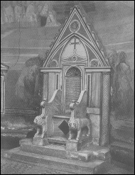

|
| A B C D E F G H I J K L M N O P Q R S T U V W X Y Z |
 (Latin thronus, cathedra, sedes episcopalis), the seat the bishop uses when not engaged at the altar. If the altar stands near the entrance to the choir, then, according to the "Caeremoniale episcoporum", the throne is to be place at the apex of the apse in the centre of the stalls of the canons that join it to the right and left. If, however, the altar is placed close to the wall of the apse, or is only a short distance from this wall, the throne must be placed on the Gospel side of the choir. According to the "Caeremoniale episcoporum" the throne is to be made in modum cathedrae et throni immobilis (in the fashion of an immovable chair or throne) such as is still to be seen in many old churches. Consequently an ordinary chair, used temporarily or only for the moment, does not suffice as the throne of a bishop, Further directions are forma praealta et sublimis, that is, the chair must have a high back and arms, and be raised above the floor so that three steps lead up to it. The steps are to be covered by a carpet, the throne itself is to have spread over it a silk cover of the same colour as the bishop's vestments, but not of cloth of gold, unless the bishop should be a cardinal. The throne can be surmounted by a baldachino only when there is a baldachino above the altar, or when the altar has a ciborium altar over it. When in another diocese, a bishop can only use the throne by virtue of a letter of dispensation from the diocesan bishop. Should a cardinal be present, the bishop must yield the throne to the cardinal and use a faldistorium placed on the Gospel side of the altar, that is, a four-legged faldstool with arms. Auxiliary bishops must always use a faldistorium. Abbots have the right to a throne in their own churches, but this throne can only have two steps leading to it, and cannot have a baldachino over it.
Time has made no essential changes in the episcopal cathedra. At different periods, especially in the twelfth and thirteenth centuries, the throne had the form of a faldistorium, but as a rule it always showed the ancient characteristic type of a seat, secured to the spot where it stood, with arms and a back of some height. The modifications that it underwent in the course of time resulted solely from the changes in the style of the art, and were therefore merely conventional. The episcopal throne in the pre-Carolingian period has been already treated in the article CATHEDRA. Other examples of the same era are the throne at Naples in the Church of St. Januarius, and the one in the Church of Santa Maria della Sanità; at Rome in San Pietro in Vincoli, San Gregorio in Celio, San Alessandro, in the Via Nomentana; at Ravenna, in San Apollinare Nuovo, besides other thrones that are in part ancient stools, especially stools for the bath. Thrones belonging to the Middle Ages and the twelfth century are to be found at Canossa, Bari, in the grotto church of Monte Gargano, in St. Emmeram at Ratisbon, in Santa Maria in Cosmedin and in San Clemente at Rome. Excellent examples of thirteenth-century thrones are those in the Churches of San Cesario, Ss. Nereo ed Achilleo, and San Lorenzo fuori le mura, at Rome. There are surprisingly few thrones of the late medieval period still in existence. Episcopal thrones that are or were surmounted by a structure similar to a baldachino are those at Torcello, Grado, and Augsburg. That as early as the eighth or ninth century the throne did not always stand at the apex of the apse, but was also placed to the right of the altar, is evident from the Roman "Ordines" of that era. However, what may have been less usual at that period became from the twelfth century customary, because it became usual to place the altar near the wall of the apse, and also to place a reredos upon the table, at least on feast days.
Illustration: Episcopal throne, Church of SS. Nereo ed Achilleo, Rome. A homily of St. Gregory the Great is inscribed in the niche which forms the back of the seat.
APA citation. (1912). Throne. In The Catholic Encyclopedia. New York: Robert Appleton Company. Retrieved April 26, 2010 from New Advent: http://www.newadvent.org/cathen/14709a.htm
MLA citation. "Throne." The Catholic Encyclopedia. Vol. 14. New York: Robert Appleton Company, 1912. 26 Apr. 2010 <http://www.newadvent.org/cathen/14709a.htm>.
Transcription. This article was transcribed for New Advent by Michael C. Tinkler.
Ecclesiastical approbation. Nihil Obstat. July 1, 1912. Remy Lafort, S.T.D., Censor. Imprimatur. +John Cardinal Farley, Archbishop of New York.
Contact information. The editor of New Advent is Kevin Knight. My email address is webmaster at newadvent.org. (To help fight spam, this address might change occasionally.) Regrettably, I can't reply to every letter, but I greatly appreciate your feedback — especially notifications about typographical errors and inappropriate ads.